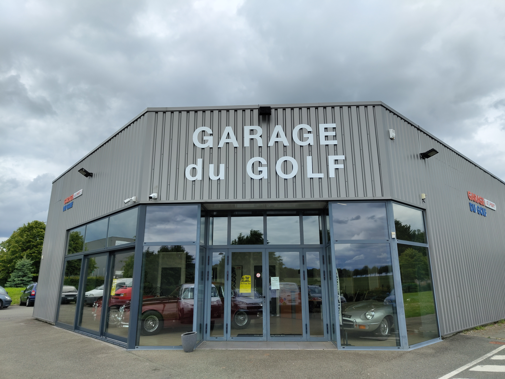

<!DOCTYPE html>
<html lang="fr">
<head>
    <meta charset="UTF-8">
    <meta name="viewport" content="width=device-width, initial-scale=1.0">
    <title>Garage du Golf</title>
    <link rel="stylesheet" href="GarageDuGolf.css">
    <link href="https://fonts.googleapis.com/css2?family=Lora:wght@400;700&display=swap" rel="stylesheet">
</head>
<body>
    <header>
        <div class="container">
            <h1>Garage du Golf</h1>
            <nav>
                <ul>
                    <li><a href="GarageDuGolf.html">Accueil</a></li>
                    <li><a href="GarageDuGolf.html#services">Nos Services</a></li>
                    <li><a href="GarageDuGolf.html#about">À propos</a></li>
                    <li><a href="GarageDuGolf.html#contact">Contact</a></li>
                </ul>
            </nav>
        </div>
    </header>

    <section id="home">
        <div class="container">
            <h2>Bienvenue au Garage du Golf</h2>
            <p>Votre garage de confiance à Pierres pour tous vos besoins en entretien, réparation automobile et vente de véhicules.</p>
            
            
            
        </div>
    </section>

    <section id="services">
        <div class="container">
            <h2>Mécanique</h2>
            <div class="service-buttons">
                <a href="carrosserie.html#services" class="service-btn">Carrosserie</a>
                <a href="mecanique.html#services" class="service-btnm">Mécanique</a>
                <a href="nettoyage.html#services" class="service-btn">Nettoyage</a>
                <a href="depannage.html#services" class="service-btn">Dépannage</a>
            </div>
        
            <div class="service-description">
                <div class="description-image">
                    
                </div>
                <div class="description-text">
                    <h2>Réparation et entretien automobile toutes marques</h2>  
                    <p>Peu importe la marque ou le modèle de votre véhicule, Le Garage du Golf est en mesure de vous proposer dexcellentes prestations dentretien, de révision et de réparation de voiture. </p>
                    <p>Nous faisons pour vous une révision complète du véhicule, des essuie-glaces aux phares en passant par la plaquette des freins, mais aussi des interventions plus lourdes comme la réparation de lembrayage, la courroie de distribution ou les amortisseurs entre autres. </p>
                    <p>Nous effectuons ensuite toutes les réparations mécaniques qui concernent le fonctionnement du moteur et de toutes les autres parties du véhicule. Le Garage du Golf sait que les réparations automobiles peuvent donner lieu à des devis exagérés, cest pourquoi lenseigne met un point dhonneur à proposer une prestation sur-mesure en fonction de vos besoins uniquement. </p>
                </div>
                
            </div>
        </div>
    </section>


    <section id="services2">
        <div class="container">
            <div class="service-description">
                <div class="description-text">
                    <h2>Partenariat avec Dekra pour le Contrôle Technique</h2>

<p>Le Garage du Golf est fier d'annoncer son partenariat avec Dekra, une entreprise renommée et spécialisée dans le contrôle technique des véhicules. Grâce à cette collaboration, nous sommes en mesure de vous offrir un service de contrôle technique complet et fiable.</p>

<p>Avant d'emmener votre véhicule au contrôle technique, notre équipe au Garage du Golf procède à une vérification minutieuse de votre voiture. Nos techniciens qualifiés inspectent chaque aspect de votre véhicule pour s'assurer qu'il est en parfait état de marche et qu'il répond aux normes de sécurité exigées.</p>

<p>Ce processus d'analyse pré-contrôle technique nous permet de détecter et de corriger les éventuels problèmes avant qu'ils ne deviennent des obstacles lors de l'inspection officielle chez Dekra. Nous vous garantissons ainsi une tranquillité d'esprit et la certitude que votre véhicule sera prêt pour passer le contrôle technique sans encombre.</p>

<p>En choisissant le Garage du Golf pour la préparation de votre contrôle technique, vous bénéficiez de l'expertise combinée de deux entités de confiance. N'hésitez pas à prendre rendez-vous dès aujourd'hui pour une analyse pré-contrôle technique approfondie et laissez-nous nous occuper du reste avec Dekra.</p></div>
                <div class="description-image">
                    
                </div>
            </div>
        </div>
    </section>


    <section id="services3">
        <div class="container">
            <div class="service-description">
                <div class="description-image">
                    
                </div>
                <div class="description-text">
                    <h2>Montage Pneumatique</h2>

<p>Le Garage du Golf offre un service de montage pneumatique de qualité pour assurer votre sécurité et optimiser les performances de votre véhicule. Nos techniciens expérimentés sont formés pour manipuler et installer divers types de pneus, adaptés à toutes les marques et modèles de voitures.</p>

<p>Nous utilisons des équipements de pointe pour garantir un montage précis et efficace. Que ce soit pour des pneus hiver, été ou toutes saisons, nous veillons à ce que chaque pneu soit monté avec soin et selon les spécifications du fabricant.</p>

<p>En plus du montage, nous proposons également des services de contrôle de la pression des pneus et de leur alignement. Ces vérifications sont essentielles pour prolonger la durée de vie de vos pneus et assurer une conduite en toute sécurité.</p>

<p>Au Garage du Golf, nous comprenons l'importance d'avoir des pneus bien montés et entretenus. C'est pourquoi nous nous engageons à vous fournir un service rapide, fiable et à des prix compétitifs. Prenez rendez-vous dès aujourd'hui pour profiter de notre expertise en montage pneumatique.</p></div>
            </div>
        </div>
    </section>


    <section id="services3">
        <div class="container">
            <div class="service-description">
                <div class="description-text">
                    <h2>Révision</h2>
                    <p>Assurez-vous que votre véhicule fonctionne parfaitement avec notre service de révision complet. Nos experts effectuent une inspection minutieuse pour garantir que chaque composant de votre voiture est en excellent état.</p>
                    <p>Lors de la révision, nous vérifions les éléments essentiels tels que les niveaux d'huile, les filtres, les freins, les pneus et bien plus encore. Notre objectif est de prévenir les pannes et d'assurer votre sécurité sur la route.</p>
                    <p>Nous utilisons des outils et des équipements de pointe pour diagnostiquer et résoudre les problèmes potentiels avant qu'ils ne deviennent des soucis majeurs. Faites confiance à notre équipe pour maintenir votre véhicule en parfait état de fonctionnement.</p>
                    <p>Une révision régulière contribue non seulement à la longévité de votre véhicule, mais aussi à une conduite plus fluide et plus sûre. Prenez rendez-vous dès aujourd'hui pour votre prochaine révision chez le Garage du Golf.</p>
                </div>
                <div class="description-image">
                    
                </div>
            </div>
        </div>
    </section>


    <section id="services2">
        <div class="container">
            <div class="service-description">
                <div class="description-image">
                    
                </div>
                <div class="description-text">
                    <h2>Diagnostic Électronique</h2>
                    <p>Le Garage du Golf propose un service de diagnostic électronique complet pour identifier rapidement et efficacement les problèmes de votre véhicule. Avec l'évolution constante des technologies automobiles, il est essentiel de disposer d'outils de diagnostic à la pointe de la technologie pour garantir des réparations précises et efficaces.</p>
                    <p>Nos techniciens sont formés pour utiliser les équipements de diagnostic les plus récents et disposent des compétences nécessaires pour interpréter les codes d'erreur et les signaux émis par les systèmes électroniques de votre véhicule. Qu'il s'agisse d'un simple voyant allumé ou d'un problème plus complexe, nous sommes en mesure de détecter et de résoudre une large gamme de problèmes électroniques.</p>
                    <p>Le diagnostic électronique couvre divers aspects de votre voiture, y compris le moteur, la transmission, les systèmes de sécurité, les dispositifs de confort et bien plus encore. Grâce à notre expertise, nous pouvons rapidement identifier les problèmes potentiels et proposer les réparations appropriées.</p>
                    <p>En choisissant le Garage du Golf pour votre diagnostic électronique, vous bénéficiez d'un service fiable et précis qui vous permet de maintenir votre véhicule en parfait état de fonctionnement. N'attendez pas qu'un petit problème devienne une grande panne, prenez rendez-vous dès aujourd'hui pour un diagnostic complet de votre véhicule.</p>
                </div>
            </div>
        </div>
    </section>


    <section id="contact">
        <div class="container">
            <h2>Contactez-nous:</h2>
            <div class="separator"></div>
        <div class="contact-info">
            <div class="contact-item">
                <strong>Email :</strong><br> atelierdugolf28130@gmail.com</br>
                <strong>Téléphone :</strong><br> 01 23 45 67 89</br>
                <strong>Adresse :</strong><br> 1 Rue des Terrasses, 28130 Pierres</br>
            </div>
        <div class="contact-item">
            <p>Horaires :</p>
            <ul>
            <li>Lundi - Vendredi : 08:30 - 19:00</li>
            <li>Samedi : 09:00 - 18:00</li>
            <li>Dimanche : Fermé</li>
            </ul>
        </div>

        </div>
            <div id="map"></div>
        </div>
    </section>

    <section id="about"> 
        <div class="container">
            <h2>À propos de nous</h2>
            <p>Le Garage du Golf, fondé en 1996 par Massimo Pannozzo, offre une expertise de plus de 28 ans dans le domaine de la réparation automobile. Notre équipe de trois mécaniciens qualifiés est à votre service pour tous types de réparations, d'entretien et de vente de véhicules.</p>
            
        </div>
    </section>

    <footer>
        <div class="container">
            <p>© 2024 Garage du Golf. Tous droits réservés.</p>
        </div>
    </footer>

    <script src="GarageDuGolf.js"></script>
</body>
</html>
